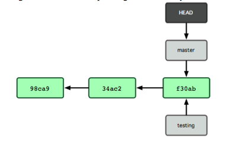
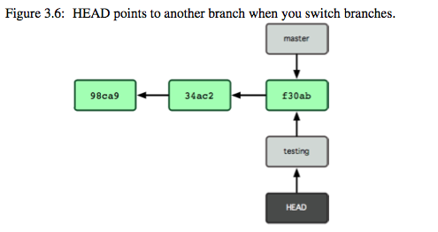
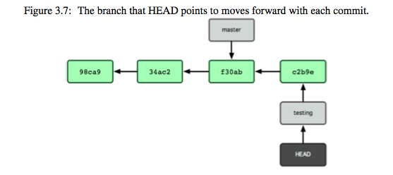
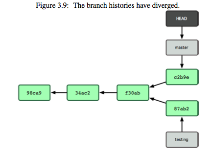
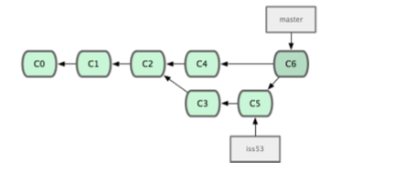

Code is hard to keep track of.
#on debian based os
$ sudo apt-get install git-core
#on fedora,
$ sudo yum install git-core
#on osx
$ brew install git
#or use the installer from https://code.google.com/p/git-osx-installer/
#on windows
#just use the installer from git-scm.org
$ git config --global user.name "Bruce Wayne"
$ git config --global user.email batman@dc.com
#if you want to change default editor for commit messages
$ git config --global core.editor emacs
#to view all settings
$ git config --list
#for any help
$ git help $Whatever
$ mkdir git-tutorial
$ cd git-tutorial
$ git init
#Just create a file called README and add whatever text you want
$ vim README
$ git status
# You should see README in untracked files
$ git add README
# adds README to staging
# if you have multiple files, you can use unix wildcards
$ git add .
$ git add *.js
# etc
$ git status
# You'll see README in changes to be committed
Often there are files we don't want to track. Specify those patterns in a .gitignore
# a comment this is ignored
*.a # no .a files
!lib.a # but do track lib.a, even though you’re ignoring .a files above
/TODO # only ignore the root TODO file, not subdir/TODO
build/ # ignore all files in the build/ directory
doc/*.txt # ignore doc/notes.txt, but not doc/server/arch.txt
$ git commit -m "My very first git commit"
# to check your commits
$ git log
# Open up README again and add some text
$ git commit -am "I skipped the staging area"
Each commit is given a SHA checksum. Remember a commit persists whatever was in your staging area
# make a file called remove.txt
# add it to the staging area
$ git add remove.txt
# commit
$ git commit -m "added remove.txt"
$ git status
# Now say I change my mind, and want to remove it
$ git rm remove.txt
$ git status
# On branch master
# Changes to be committed:
# (use "git reset HEAD <file>..." to unstage)
#
# deleted: remove.txt
$ git mv README README.md
$ git status
# On branch master
# Changes to be committed:
# (use "git reset HEAD <file>..." to unstage)
# renamed: README -> README.md
$ git commit -am "renamed README"
assume you screwed up a commit message, or forgot to add a file
$ git commit -m "pre-amend commit"
# create a file
$ touch test-amend.txt
$ git add test-amend.txt
$ git commit --amend
# say I added some stuff I'm not supposed to README.
$ git add .
# oops.
$ git reset HEAD README
# et voila.
# Will explain what HEAD means later
# to clone a repo from a ssh/https url
$ git clone git@github.com:olenhad/git-workshop.git
# or if you prefer
$ git clone https://github.com/olenhad/git-workshop.git
$ git remote -v
# lists all remotes with urls
$ git remote add mySexyRemoteName git://mysexyrepourl
everyone should have a github account by now
Just create a repo called git-tutorial (or whatever you want really).
$ git remote add origin https://github.com/arandomusername/git-tutorial.git
# or if you prefer ssh (I do!)
$ git remote add origin git@github.com:arandomuusername/git-tutorial.git
to set up ssh keys check this guide
$ git push origin master
# Will obviously push our latest changes to remote named
# "origin" in branch "master"
# Lets assume someone else pushed some changes.
$ git fetch origin
# fetch pulls the latest data from the repo.
# fetch doesn't update your code. It just updates the repo.
$ git merge origin/master
# to merge your master branch with the remote's branch
# faster method
$ git pull origin master
Git is a distributed version control system
$ git branch
# lists all branches
$ git branch testing
# creates a new branch called testing.
# git uses a pointer called HEAD to track current branch

$ git checkout testing

Lets add a commit
$ git commit -am "change to test testing"

$ git checkout master
# .. perform some edits
$ git commit -am "changed stuff in master"

$ git merge testing
# git finds the best common ancestor
# performs a three way merge between common ancestor,
# the snapshot to be merged, and the snapshot merging into.

Sometimes a merge would fail
especially when same file edited in both snapshots
<<<<<<< HEAD:index.html
<div id="footer">
contact : email.support@github.com</div>
=======
<div id="footer">
please contact us at support@github.com
>>>>>>> testing:index.html
$ git branch -d testing
# to delete branches
$ git branch --merged
# check which branches are already merged
Pop up an ec2
# on your vm
$ git clone --bare https://github.com/olenhad2/git-tutorial.git
# bare repositories just contain git data
$ cd git-tutorial.git/hooks
$ vim post-receive
echo "hello from server"
$ chmod +x post-receive
Give your vm a static ip
add that to your ssh config
$ vim ~/.ssh/config
Host git-test
HostName 46.137.253.77
User ubuntu
$ git remote add ec2 git-test:/home/ubuntu/git-tutorial.git
$ git push ec2 master
...
# remote: hello from server
#on your server
$ sudo apt-get install apache2
# add ubuntu to www-data group. give the group permissions over /var/www
$ sudo adduser ubuntu www-data
$ sudo chown -R www-data:www-data /var/www
$ sudo chmod -R g+rw /var/www
$ vim ~/git-tutorial.git/hooks/post-receive
echo "hello from server"
export GIT_WORK_TREE=/var/www/
git checkout -f
sudo /etc/init.d/apache2 restart
#on your machine
$ vim index.html
$ git push ec2 master
# Go to your IP and enjoy